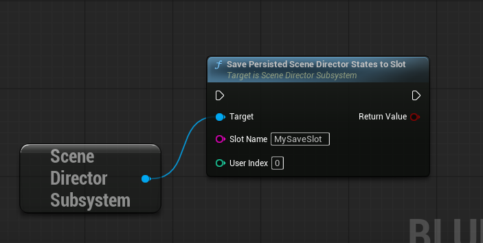
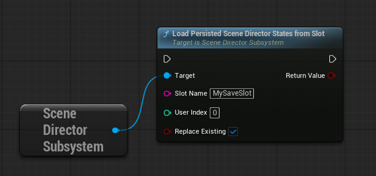
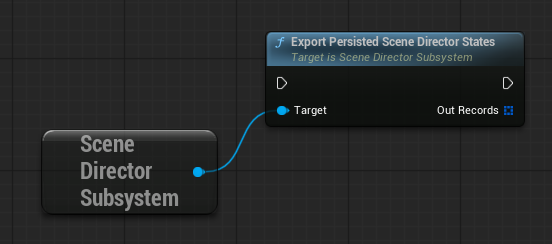
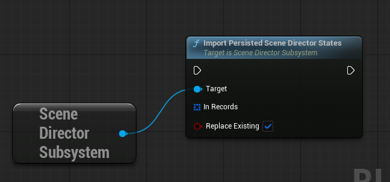

Scene Director State Persistence
State Persistence lets Scene Director remember graph progress.
Use it when a scene should continue after save/load instead of starting again from the beginning.
Typical example:
- an NPC scene is already running
- the game is saved
- later the game is loaded
- Scene Director restores the saved progress and continues from that point
This guide explains:
- what Scene Director actually remembers
- graph asset settings that control capture and restore
- how a graph resumes after load
- how to save that state to a
SaveGameslot or your own save system
What is actually saved
Only graph progress and node fields marked with
SaveGame.
Important:
- enable
State Persistenceon the graph asset - mark custom node fields with
SaveGameif they must survive save/load - this does not replace your normal game save system
Built-in nodes that already persist resume-critical data include Random (prebaked sequence), Gate (open/closed), and For Each (Count) (current iteration).
Graph asset settings
When State Persistence → Enabled is on, three extra settings appear on the Action Graph asset.
Capture Policy
Controls when Scene Director writes a runtime snapshot.
On Abort(default) — capture only when the run is aborted.On Node Transition— capture whenever a task finishes and flow moves on.On Node Transition Or Abort— both of the above.Never (Do Not Capture State)— do not store node/runtime snapshots.
Never is useful when you only want the auto-start signal (see below) without restoring node-level progress. With Never, the graph still starts from the beginning after load unless you handle resume yourself.
Completed Policy
Controls what happens to the snapshot after a normal graph finish (not abort).
Clear(default) — delete persisted state when the run completes successfully.Keep In Memory— leave the last snapshot in memory. The next launch can restore it ifRestore From Stateis enabled.
Auto Start On State Restore
When enabled, Scene Director automatically calls Run Scene Director after import/load for graphs that were running at save time.
Requirements and limits:
- persistence must be enabled on the graph
- not available for Single Runtime Participant graphs — they need an explicit actor binding at launch
- if Capture Policy is
Never, auto-start can still happen, but the graph begins from the start with no node snapshot
For manual control, leave this off and start graphs yourself with Restore From State = true. See Basic Usage.
On Restored
Place an On Restored control node anywhere in the graph.
- It fires once when the run starts from a restored snapshot (after load/import or when
Restore From Statesucceeds). - Use it for one-time setup that should not repeat on a fresh run — rebind UI, replay a short intro sting, refresh world props, etc.
It does not fire on a normal first launch with no saved state.
Clearing persisted state
From graph nodes
Abort— optionalClear Persisted State. When enabled, aborting also deletes this run's snapshot.Stop Other Graphs— same optional flag for every run it stops.
From subsystem
ClearSceneDirectorStatesForGraph(Graph Class)ClearAllSceneDirectorStates()
When stopping from code
Most stop functions accept Clear Persisted State.
When a higher-priority graph preempts a lower one
If the incoming graph has Clear Preempted Graph State enabled, stopped conflicting runs also lose their snapshots.
Export records and Was Running At Save
When you call ExportPersistedSceneDirectorStates, each record can include:
State— node snapshots and taskSaveGamepayloadsWas Running At Save—trueif that graph had an active running instance at export time
Import uses Was Running At Save together with Auto Start On State Restore to decide which graphs should restart automatically.
Even when Capture Policy is Never, export can still emit a lightweight record with Was Running At Save = true so auto-start knows the graph was active — but without node-level restore data.
Action node authoring
If you only use built-in nodes, you can usually skip this section.
Scene Director gives custom nodes two useful hooks:
On Before Capture Persistent State
- Called right before state capture. - Use it to copy runtime progress into saved fields.
On Persistent State Restored
- Called after state restore. - Use it to rebuild anything that should exist again after load.
In Blueprint, implement these events directly. In C++, override the _Implementation methods.
For full authoring details, see Custom Action Node Authoring.
Example
UCLASS()
class UActionNode_MyWaitLike : public UActionNode
{
GENERATED_BODY()
private:
UPROPERTY(Transient, SaveGame)
float RemainingSeconds = -1.0f;
virtual void OnBeforeCapturePersistentState_Implementation() override
{
RemainingSeconds = /* snapshot runtime remaining time */;
}
virtual void OnPersistentStateRestored_Implementation() override
{
// optional fixup after load
}
};Two save approaches
You can use either approach, or both:
- Built-in file save (simple): subsystem writes/reads a dedicated SaveGame slot.
- Custom save system (flexible): subsystem exports/imports persistence data, and your project decides where/how to store it.
1) Built-in file persistence (SaveGame slot)
Use when you want a ready-to-use file save path without extra infrastructure.
Save to file
Call on subsystem:
SavePersistedSceneDirectorStatesToSlot(SlotName, UserIndex)
Returns true on success.

Load from file
Call on subsystem:
LoadPersistedSceneDirectorStatesFromSlot(SlotName, UserIndex, bReplaceExisting)
Usually, bReplaceExisting=true is the safest default.
After load, graphs with Auto Start On State Restore restart on their own. Others need a manual Run Scene Director with Restore From State = true.

Typical flow
- World/game initializes.
- Load Scene Director state from slot.
- Make sure the required actors exist again.
- For graphs without auto-start: call
Run Scene DirectorwithRestore From State = true.
2) Custom save system (your own files/back-end)
Use when you already have project-specific save architecture.
Export from subsystem
Call:
ExportPersistedSceneDirectorStates(OutRecords)
Then store the exported records in your own save system.

Import into subsystem
Call:
ImportPersistedSceneDirectorStates(InRecords, bReplaceExisting)
After import:
- graphs with Auto Start On State Restore may restart automatically
- otherwise start with
Restore From State = true

Minimal custom integration pattern
- At save time:
- call ExportPersistedSceneDirectorStates. - write the exported data into your own save payload.
- At load time:
- read the saved data back from your payload. - call ImportPersistedSceneDirectorStates. - start graphs (or rely on auto-start) with Restore From State = true where needed.
Practical notes
- The actors used by the graph should exist again after loading.
- Single Runtime Participant graphs must be started with
Run Scene Director With Single Actor— persistence restore still works, but auto-start cannot do this for you. - With Graph Trace enabled in the Action Graph editor, restore events appear in the Trace tab. See Console Commands — Graph Trace.
- You can clear stored Scene Director state manually when needed:
- ClearSceneDirectorStatesForGraph - ClearAllSceneDirectorStates
See also
- Runtime Control — stop APIs and
Restore From Stateon launch. - Basic Usage — Graph settings